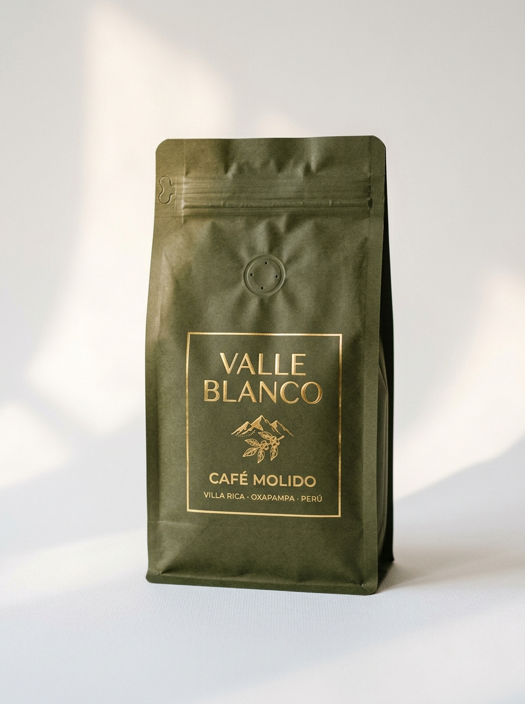

Mas popular

Cafe Molido
Consultar pedido
Valle Blanco Clasico
Molido artesanalmente para filtrado, prensa francesa y metodos de goteo. Listo para preparar en casa con la frescura y el aroma del grano recien tostado.
Notas de sabor
TuesteMedio
Peso250 g
VariedadCaturra / Typica
Altitud1,600 msnm